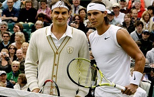

(
(
Are you a tennis player? Do you want to play like Roger Federer?
Federer is a seasoned player with several Wimbledon, US Open, French Open, and Australian Open titles in his career. He is originally from Basel Switzerland.
Federer has faced all the contemporary tennis greats, including Rafael Nadal, Novak Djokovic, Andy Murray.
Some of his stats include:
Federer is a seasoned player with several Wimbledon, US Open, French Open, and Australian Open titles in his career. He is originally from Basel Switzerland.
Federer has faced all the contemporary tennis greats, including Rafael Nadal, Novak Djokovic, Andy Murray.
Some of his stats include:
- 17 major grand slam titles
- First player with 300 career wins
- 7 Wimbledon titles
- win-loss record: 1067:240
- Tournaments played: 344
